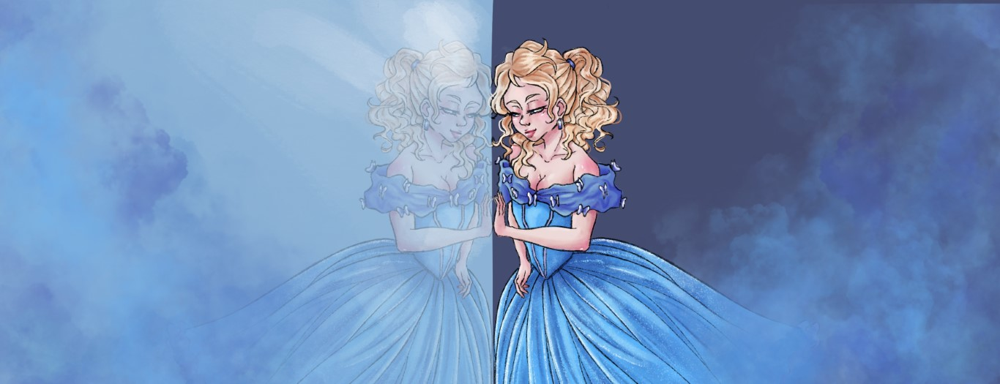
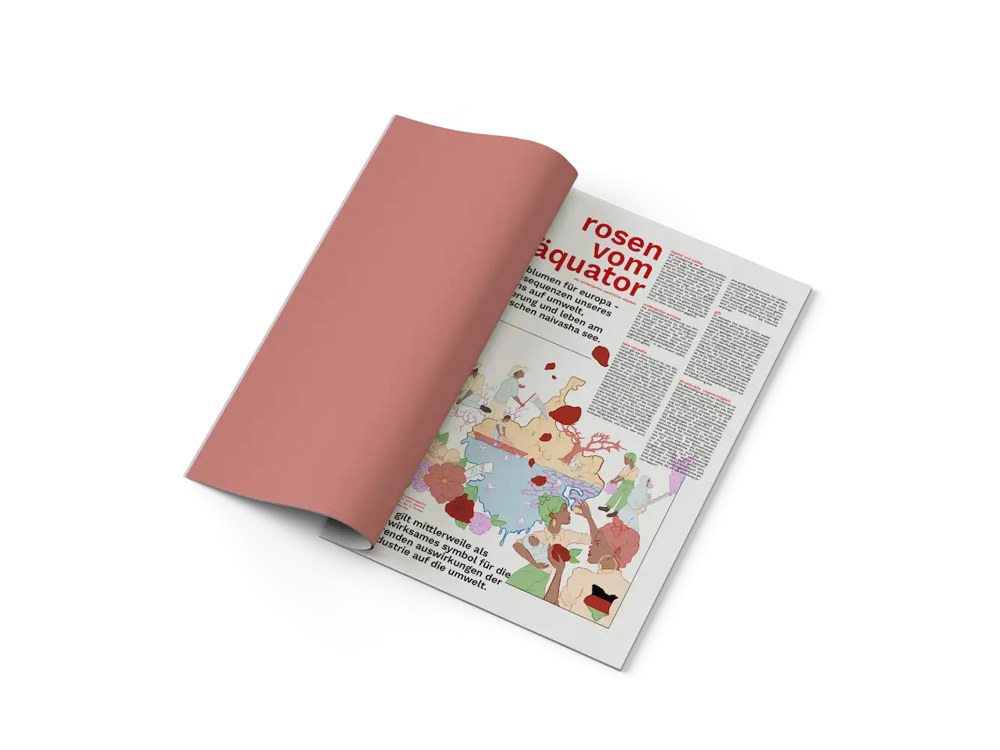

Illustration

Yuki Onna
Kinderbuch
Illustration des japanischen Märchens "Yuki Onna 雪女" (Schneefrau) im Stil eines Kinderbuchs Übersetzung von: Lafcadio Hearn (*1850-1904) In: Kawaidan Stories and Studies of Strange Things (1904)
Rosen am Äquator
Editorial
Illustration als visuelle Unterstützung oder als Aufhänger zu dem Text: "Rosen am Äquator", zum Thema der Schnittblumenindustrie
in Kenia
Layout und Text von: Lehrbeauftragen der TH-Nürnberg Luisa Strömer und Eva Wünsch


Vereine Amberg
Character Design
Eine Reihe an Charakteren, die im Auftrag des Stadtjugendrings Amberg für die Vereine illustriert wurden.
Der Auftrag beschränkt sich auf die Illustrationen. Bei dem hier gezeigten Layout handelt es sich um ein eigen erstelltes Konzept.